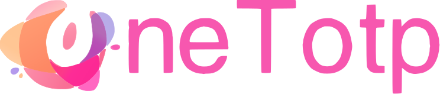
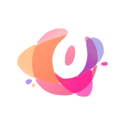

OneTotp Logo · SVG 描摹交付由带水印的位图重绘为纯矢量，不含水印
① 完整 Logo744 × 159

oneTotp-logo.svg 白底
oneTotp-logo.svg 深色底（2/3 尺寸）
oneTotp-logo.svg 浅灰底（1/2 尺寸）
② 图形标记204 × 154
oneTotp-mark.svg 100% / 50% / 25%
③ 方形图标版512 × 512，标记居中、四周留白 14%
oneTotp-icon.svg 256 / 128 / 64 / 32 / 16
④ 已生成的全套应用图标tauri/ —— 用官方 tauri icon 从 oneTotp-icon.svg 生成，52 个文件

256 / 128（@2x）· 128 · 64 · 32 · Windows 磁贴 150
⑤ 提取出的配色标记 15 个色块中的主色 + 字标色
#F757AF字标主色
#FE936C橙（左侧主块）
#FFC694浅橙
#FD2D92玫红（右下主块）
#FA7C9E鲑粉
#FEADBF浅粉
#B660B6紫红
#B7ACE8浅紫
#FF67C1品红
#AE92EB紫（小点）
⑥ 关于水印
原图带有「标小智 / LOGOSC」的斜向灰色水印。描摹时按饱和度区分墨迹与背景：
水印是灰白（饱和度 < 10），Logo 全部是彩色（饱和度 > 30），因此在分色阶段就被整体剔除，
矢量结果里不含任何水印像素，也无需手工修图。